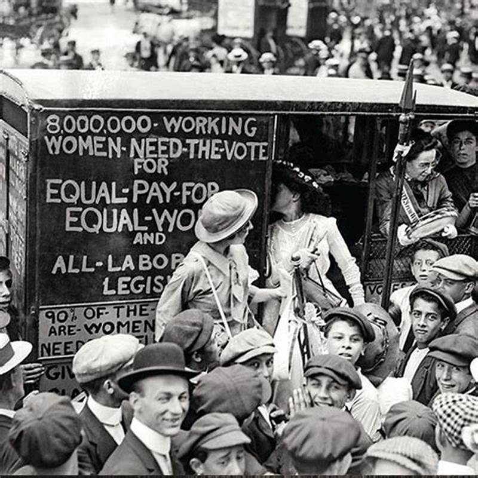

DECENT WORK AND ECONOMIC GROWTH
SDG 8.3: PROMOTE POLICIES TO SUPPORT JOB CREATION AND GROWING ENTERPRISES
Sustainable Development Goal (SDG) 8.3 is all about creating opportunities for inclusive economic growth and decent work for everyone. It highlights the need for policies that foster entrepreneurship, innovation, and the growth of small and medium-sized businesses, all of which are crucial for building strong economies. It aims to tackle these issues by promoting fair job creation, better working conditions, and access to financial support for all workers.
Challenges in Achieving SDG 8.3
Job Insecurity:
Most people, especially those who work in informal sectors, don't have job security, stable wages, or access to social benefits.

Image Source: CPUSA Archives
Wage Inequality:
Social inequalities based on gender, age, ethnicity, and disability often result in unequal opportunities, making it harder for groups like women and people with disabilities to secure jobs or advance in their careers. Similarly, higher wages in some provinces create an economic imbalance, where wealthier areas thrive while lower-wage regions struggle. This can hinder overall economic growth, as unequal opportunities and imbalanced wealth distribution prevent equitable development.

Image Source: Historical Pix
Access to Finance:
Small and medium-sized enterprises (SMEs) are important for creating jobs, but they often have trouble getting the funds they need to grow.They also face challenges in accessing financing due to a lack of collateral, high interest rates, and limited access to venture capital.
Image Source: Suryani Suyato & Associates
Digital Divide:
Social inequalities based on gender, age, ethnicity, and disability often result in unequal opportunities. For example, women and people with disabilities struggle to get jobs and advance in their careers.

Image Source: SSRC BLOG
Things We Should Do
Foster Education and Skill Development for Innovation
Let's support and improve education and skill development across all industries to give people the tools they need to succeed. At the same time, we should encourage individuals and businesses to take risks and explore new technologies, helping them innovate and stay relevant in today's ever-changing world.
Transforming MSMEs through Technology
We can support medium-sized enterprises (MSMEs) by encouraging them to embrace digital tools and technologies, enabling them to reach a wider range of customers. This approach will help them compete more effectively. By adopting these technologies, MSMEs can expand their reach, unlock new opportunities for growth, and drive innovation.
Promoting Decent Jobs and Fair Wages
Policies for employment should promote decent work by ensuring that workers have fair wages, improved working conditions, and protecting labor rights. It's also important to support the growth of the industry that provide stable and long-term jobs.